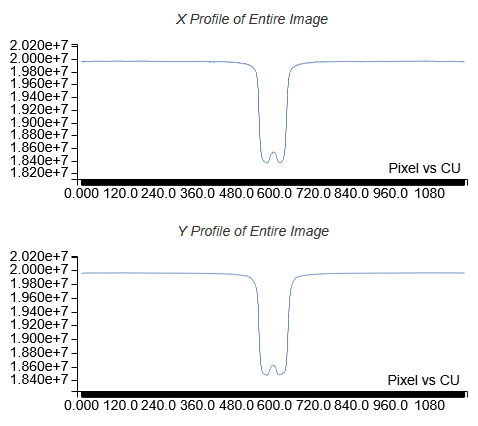
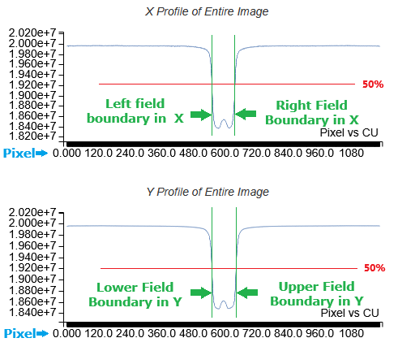
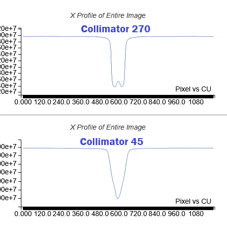
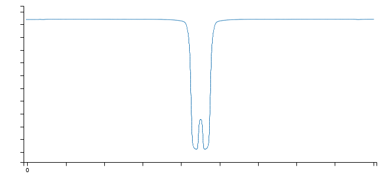
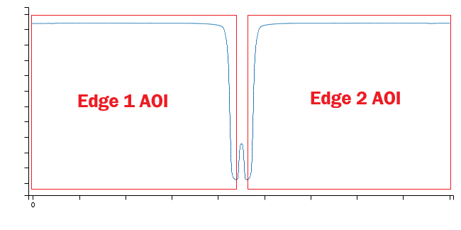
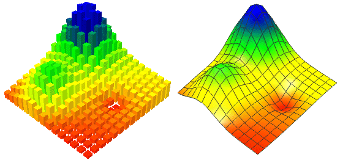

This document describes the processing steps that are taken in calculating WinLutz360 results.
WinLutz360 is a complete re-implementation of Winston Lutz that has the added capability to handle non-cardinal collimator angles (e.g. 37.29164 degrees).
It uses the same processing regardless of the collimator angle. There is no 'special case' handling for cardinal angles. The collimator angle used for processing is extracted from the RTIMAGE file. Usually this deviates slightly from the planned angle. For example, the plan may specify 90 degrees, but the RTIMAGE reports 90.02 degrees. In this case WinLutz360 uses the 90.02 value.
WinLutz360 supports:
Bicubic Edge Interpolation
This step produces a very coarse approximation of the field and ball.
Profiles of the entire image are calculated in the X and Y direction. The example shows X and Y profiles for an image with collimator at 270 degrees. The small 'bump' in the center is caused by the ball:

The highest and lowest values are used to calculate the 50% point of each profile (marked in red below). Then, the intersections of the 50% points and the profile are found (marked in green below), which establishes the left, right, lower, and upper bounds of the field. These four values define a rectangle, the center of which is used as the coarse location:

The image below illustrates the differences between profiles of images with collimator at 270 verses 45 degrees. The 45 degree image shows a 'V' shape compared with the steeper edges of the 270 image. Also, the small effect of the ball in the 45 degree image is obscured by the profile of the edges.

The images below show the coarse field measurements with a yellow border around each. The border has been expanded by the estimated penumbra thickness to better illustrate the result. Click the images for a larger view.
The coarse location provides only provides the center of the field. At this point we still don't know how far the edges are from the center.
To find the approximate location of the edges, two rectangular AOIs (areas of interest) are constructed, the first parallel to the collimator angle, and the second perpendicular to it. Each are centered at the coarse location, and extend to the edge of the image. The width is 4mm, which is small enough to be narrower than the field width, but large enough use a statistically sufficient number of pixels. It is similar to the one acquired in the coarse measurement, but in this case the effect of the ball is always distinctly observable. The image below is an example from data acquired with the collimator at 45 degrees:


This is the final step in locating the edges. It is similar to approximate location, but the four areas of interest are constructed using the approximate location. Given that the edge positions are known with a high degree of certainty, the AOIs are made with a larger portion of each edge, which yields a more accurate result.
The image below shows the four AOIs. Each has a crossing line indicating where it found the edge, and is labeled with the edge it represents. The two crossing lines in the center are the halfway points between each pair of opposing edges and give the precise location of the center of the edges. The 'horns' on edges Y1 and Y2 are due to leakage between opposing leaf ends.
The profiles for these AOIs are sampled at a higher resolution than the approximate phase, producing a more accurate result. The AOIs are not extended to the edge of the image, because the values farther away are largely the same, and processing them takes an excessive amount of computing time.
The ball area in the image has been brightened to better show the ball.
Along with the edge profiles, the diagnostics show edge gradients. They are calculated by finding the sums of pixels in rows to those of the profile. These are not used in any analysis, but can give clues as to how the test is performing.
The image below show two profiles and a gradient.
To locate the ball, first an AOI is made by using the minimum values of the AOIs determined in the edge analysis. The ball AOI is supersampled with pixel interpolation, and then calculating center of mass.
Profile of the ball in one axis used to find center:
This image shows the ball AOI with two orthogonal lines marking the center of the ball. Click for larger image.
The ball diagnostics also show an image that highlights the background immediately adjacent to the ball. This is only for purposes of illustration and is not used in any calculations. What it does show is the effects of the stem that supports the ball. Ideally, the stem would be perfectly transparent to the beam, but in some cases it is not. No compensation is done for the effects of the stem, and a less transparent stem will change the calculated position of the ball. The image below shows an image from another data set where the effects of the stem are large enough to be observed on the right-hand side.
While images delivered with FFF are supported, a poorly centered ball with FFF may produce an exaggerated error. When measuring the ball's position, no compensation is made for FFF.
This image shows the profile of a ball delivered with FFF:
Several of the processing steps described here use rectangular AOIs that are at non-cardinal angles. This creates situations where individual pixels are partially in and partially out of the AOI. To address this, bicubic interpolation is used, which allows sampling at arbitrary points in the image.
This image illustrates how surface, measured at discrete points, is mathematically smoothed. The smooth model can be sampled at any arbitrary point. This sampling is used for the approximate edge measurement, precise edge measurement, and ball measurement. For efficiency reasons, the approximate edge measurement step uses a coarser resolution. The precise and ball use a (configured) resolution of 0.1 samples per linear pixels. This results in a resolution of 100 samples per pixel.

It is possible for a non-Winston Lutz image to be submitted for analysis (e.g. VMAT, IsoCal phantom, patient scan). The following precautions are taken to avoid processing such images as valid Winston Lutz. If any of these fails then the image will be rejected and no results will be put in the database.
{kind=link}
{kind=link}
{kind=link}
{kind=link}
{kind=link}
{kind=link}
{kind=link}
{kind=link}
{kind=link}